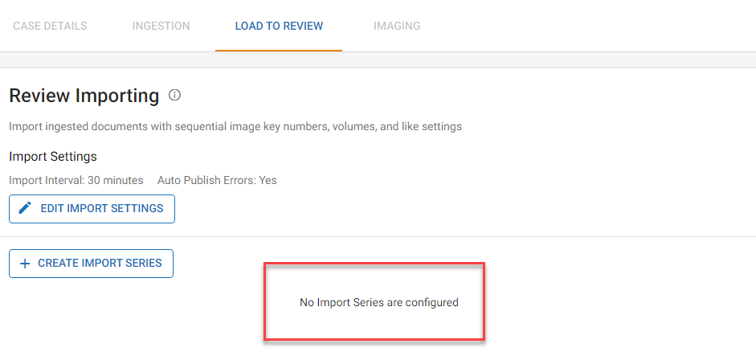

Create an Export of the natives in your review case that need text extracted. See
|
|
Note: If all natives already exist in the volume provided by the 3rd party, you can use that volume for processing. |
Create a new processing case in
|
|
Note: This one case can be used for all similar jobs across all matters. Jobs can be deleted after text is exported and imported to the review case. |
Confirm that no Import Series has been created or linked to the new processing case. For more information on Import Series, see

Create a Media Manager Delivery, Media and Location based on the location of the natives. See
-
Process the Media (native documents). Use Streaming so that every document has extracted text or OCR. See

Note: Use Custodian to track sets of documents that need text.